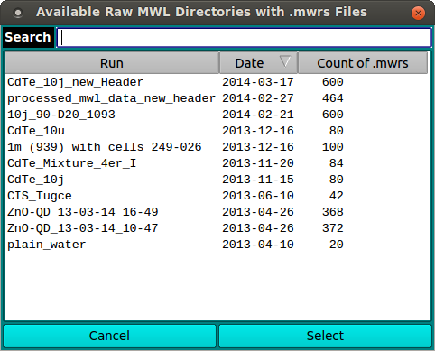

UltraScan MWL Data Loader:
This dialog presents a list of run directories from which to
select MWL data to load. One of two types of data may be loaded.
- Raw MWL The unprocessed .mwrs files of a run.
- US3 MWL The already imported US3 .auc files for an
experiment.
Dialog Window:
The sample image here results from the main MWLR viewer
Load Raw MWL Data being clicked. A very similar dialog is
shown when Load US3 MWL Data is clicked.

Functions:
-
Search The text box to the right of this label may be
filled with any identifying characters to use in filtering the
Run fields of the main list. Search substrings are case insensitive.
-
Run This header may be clicked to sort or change sort
order of list items by run ID.
-
Date This header may be clicked to sort or change sort
order of list items by date.
-
Count of .mwrs (or Count of .auc) This header may
be clicked to sort or change sort order of list items by
count of data files in the directory.
-
Cancel Click here to cancel any selection and close the
dialog.
-
Select After selecting a run row in the list, click this
button to close the dialog and return the selected run to the
caller.